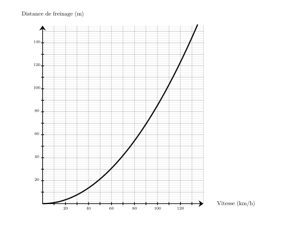
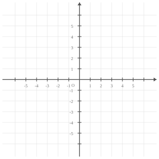
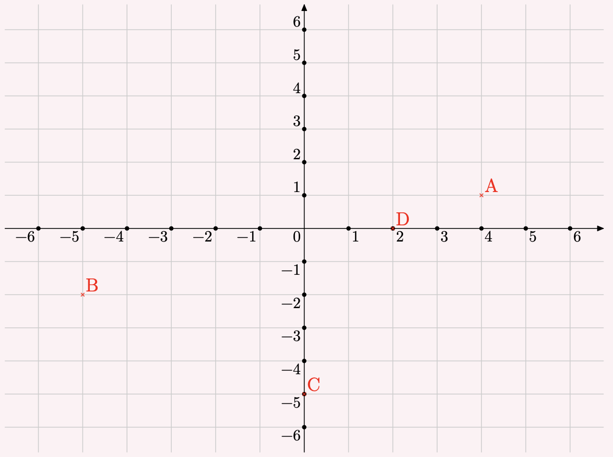

Une voiture roule à la vitesse de $110\text{ km/h}$ sur une route sèche.
En utilisant le graphique ci-dessous, quelle est la distance de freinage en mètres ?

Pour une vitesse de $110\text{ km/h}$, la distance de freinage est d'environ ${\color{#8B3C52}\boldsymbol{104}}\text{ m}$.
On utilise le théorème de Pythagore dans le triangle $TUV$, rectangle en $U$.
On obtient :
$\begin{aligned}
TU^2+UV^2&=TV^2\\
UV^2&=TV^2-TU^2\\
UV^2&=9^2-4^2\\
UV^2&=81-16\\
UV^2&=65\\
UV&={\color{#8B3C52}\boldsymbol{\sqrt{65}}}
\end{aligned}$
Mentalement :
La longueur $UV$ est donnée par la racine carrée de la différence des carrés de $9$ et de $4$.
Cette différence vaut $81-16=65$.
La valeur cherchée est donc : $\sqrt{65}$.
01
Question
Effectuer les calculs suivants en donnant le résultat sous forme d'une fraction. $A = 2 + \dfrac{6}{3} $
Placer les points suivants : $A(4\;;\;1)$ ; $B(-5\;;\;-2)$ ; $C(0\;;\;-5)$ et $D(2\;;\;0)$.

Les points sont placés aux coordonnées indiquées :

04
Question
Sur la figure suivante :
$\leadsto U$ est sur $[TR]$,
$\leadsto V$ est sur $[TS]$, $\leadsto$ les droites $(RS)$ et $(UV)$ sont parallèles. Écrire la double égalité de Thalès.
Dans le triangle $RST$ :
$\leadsto$ $U\in[TR]$,
$\leadsto$ $V\in[TS]$,
$\leadsto$ $(RS)//(UV)$,
donc d'après le théorème de Thalès, les triangles $RST$ et $UVT$ ont des longueurs proportionnelles.
$\dfrac{TU}{TR}=\dfrac{TV}{TS}=\dfrac{UV}{RS}$
Remarque On pourrait aussi écrire : $\dfrac{TR}{TU}=\dfrac{TS}{TV}=\dfrac{RS}{UV}$
01
Question
Compléter avec le signe < ou >. $0{,}7 \quad \ldots \quad-0{,}9$
Pour résoudre l'équation $6x+3=12$, on commence par soustraire $3$ des deux membres de l'équation, ce qui donne $6x=12-3$.
Ensuite, on divise les deux membres par $6$ pour obtenir $x=\dfrac{12-3}{6}$.
La bonne réponse est la réponse B.
03
Question
$CEJI$ est un parallélogramme tel que ses côtés $[CE]$ et $[EJ]$ sont perpendiculaires et ses diagonales $[CJ]$ et $[EI]$ aussi. Déterminer la nature de $CEJI$ en justifiant la réponse.
On sait que $[CE]\perp[EJ]$ et $[CJ]\perp[EI]$. Si un parallélogramme a deux côtés consécutifs perpendiculaires et des diagonales perpendiculaires, alors c'est un carré. $CEJI$ est donc un carré.
04
Question
Dans le triangle $WXY$ rectangle en $W$, $WX=8\text{ cm}$ et $\widehat{WXY}=45^\circ$. Calculer $XY$ à $0,1\text{ cm}$ près.
Dans le triangle $WXY$ rectangle en $W$, le cosinus de l'angle $\widehat{WXY}$ est défini par : $\cos\left(\widehat{WXY}\right)=\dfrac{WX}{XY}$. Avec les données numériques : $\dfrac{\cos\left(45^\circ\right)}{\color{red}{1}}=\dfrac{8}{XY}$
$XY=\dfrac{8 \times\color{red}{1}}{\cos\left(45^\circ\right)}$ soit $XY\approx{\color{#8B3C52}\boldsymbol{11{,}3}}\text{ cm}$.